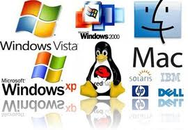

Sistemi operativi
|  |
| In informatica il sistema operativo, abbreviato in SO (in inglese OS, "operating system") è un insieme di componenti software, che garantisce l'operatività di base di un calcolatore, coordinando e gestendo le risorse hardware di processamento e memorizzazione, le periferiche, le risorse software (processi) e facendo da interfaccia con l'utente, senza il quale quindi non sarebbe possibile l'utilizzo del computer stesso e di altri software più specifici, come applicazioni o librerie software.
È dunque un componente essenziale del sistema di elaborazione che funge da "base" al quale si appoggiano gli altri software, che dunque dovranno essere progettati e realizzati in modo da essere riconosciuti e supportati da quel particolare sistema operativo. Assieme al processore, con cui è strettamente legato, costituisce la cosiddetta piattaforma del sistema di elaborazione.
|
Vista |
Mac |
| Andrea Calvi 27/03/93 studente alla galdus corso : operatore elettronico in ambito informatico |